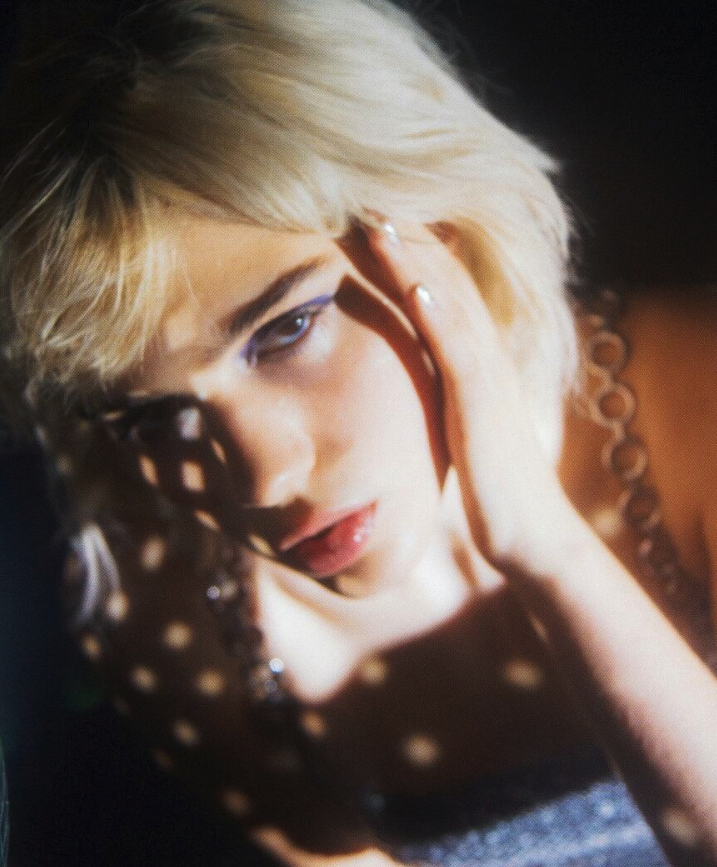
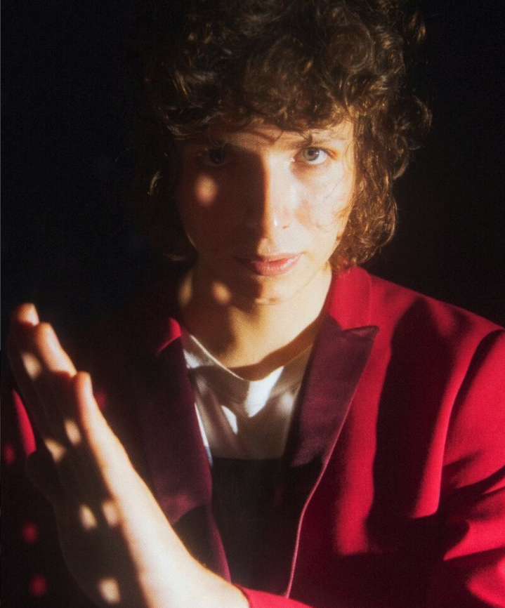
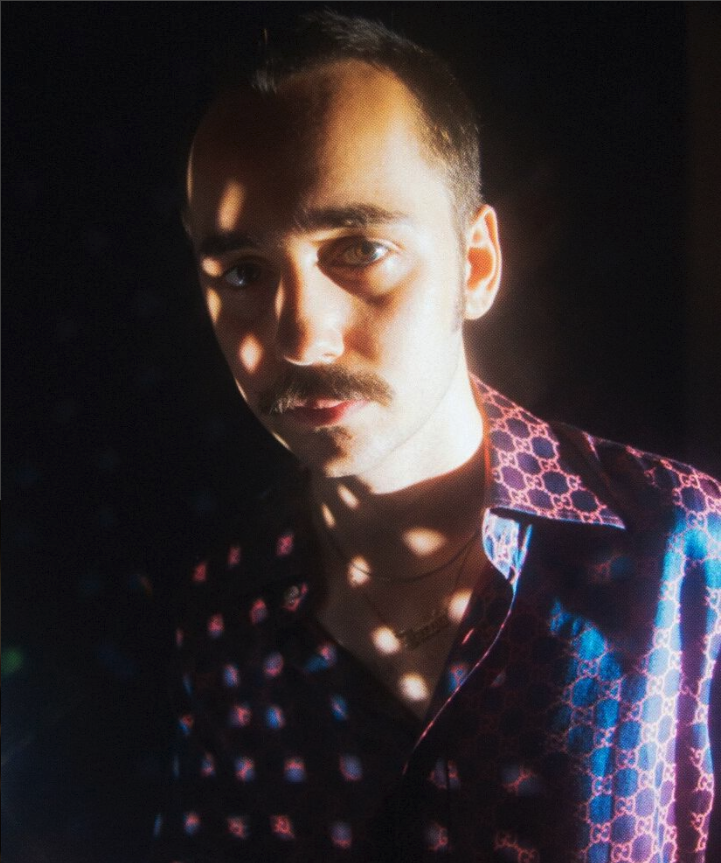

Band Members
Julia Cumming
Vocals and Bass

Nick Kivlen
Vocals and Guitar

Jacob Faber
Drums
In a Brooklyn sea of dream-pop and indie-rock, Sunflower Bean wants to bring back some good, old-fashioned rock n roll. The trio—comprised of Julia Cumming, Nick Kivlen, and Jacob Farber—have taken it upon themselves to make up their own version of rock-‘n’-roll for the digital age. Drawing from lo-fi sounds and dark rock and psychedelic undertones, Sunflower Bean’s music is not as delicate as the band’s name might lead you to believe: it’s sultry and hypnotic.
Growing up on Long Island, Nick Kivlen and Jacob Faber barely knew any other kids at their high school who listened to rock & roll. "You don't know that rock music exists in this age unless someone shows you," says Faber, 20. But they found it: Kivlen, also 20, obsessed over Metallica and Minor Threat before discovering Obama-era indie ("The first Beach Fossils album changed my life," he says), while Faber, a talented jazz saxophonist, realized it was more fun to drum along to Nirvana and Foo Fighters records at home.
By the summer after they graduated in 2013, they were gigging around New York as Sunflower Bean, with Kivlen on guitar and vocals and Faber behind the kit. "We were naively serious about the band," Kivlen says. Sunflower Bean took off after they added singer and bassist Julia Cumming, a kindred spirit from Manhattan who was studying classical singing at a performing-arts high school but preferred Seventies glam and lost-years Brian Wilson.
Sunflower Bean’s debut LP, Human Ceremony, was issued by Fat Possum Records in early 2016.